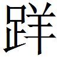
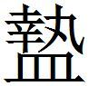

楚一
鮑本 楚：今之南郡、江夏、零陵、桂陽、武陵、長沙、漢中、汝南，皆其分也。江陵故郢都，西通巫、巴，東有雲夢之饒。
齊楚構難
齊、楚構難，宋請中立。齊急宋〔一〕 ，宋許之。子象〔二〕 為楚謂宋〔三〕 王〔四〕 曰：「楚以緩失宋，將法齊之急也。齊以急得宋，後將常急矣。是從齊而攻楚，未〔五〕 必利也。齊戰勝楚，勢必危宋；不勝，是以弱宋干強楚也〔六〕 。而令兩萬乘之國，常以急求所欲，國必危矣。」
〔一〕 鮑本 告急於宋。補曰：「請」字宜在「急」下，殽脫於此。中立豈待請耶？
〔二〕 鮑本 楚人。
〔三〕 鮑本 無「宋」字。
〔四〕 姚本 劉作楚王。一作宋王。鮑本 公剔成。正曰：剔成未嘗稱王。此偃也，與懷、襄相接。
〔五〕 鮑本 「未」上有「之」字。
〔六〕 鮑本 言以助齊犯楚之怒。補曰：將法齊之急，言楚今結於宋；齊後將常急，言楚之攻齊未已；齊戰勝楚，勢必危宋，言齊強必併宋。
五國約以伐齊
五國約以伐齊〔一〕 。昭陽謂楚王曰：「五國以破齊〔二〕 秦，必南圖〔三〕 楚。」王〔四〕 曰：「然則奈何？」對曰：「韓氏輔國〔五〕 也，好利而惡難。好利，可營也〔六〕 ；惡難，可懼也。我厚賂之以利，其心必營。我悉兵以臨之，其心必懼我〔七〕 。彼懼吾兵而營我利，五國之事必可敗也。約絕之後，雖勿與地可。」
〔一〕 姚本 劉作「約秦」。鮑本 「齊」下有「秦」字，原注「衍齊字」。秦惠後七年，趙、韓、魏、燕、齊共攻秦，此十一年。補曰：「齊」字疑誤衍。五國伐秦可考，策 併言齊，不可考。懷王為從長，率五國伐秦之明年，齊敗魏、趙于觀津，即策 所謂齊反趙、魏者歟？
〔二〕 鮑本 無「齊」字，「以」作「已」。
〔三〕 鮑本 圖楚。
〔四〕 鮑本 補曰：楚句。
〔五〕 姚本 錢、集「轉國」。鮑本 言可為楚之助。
〔六〕 鮑本 營，猶求。可使求我。
〔七〕 鮑本 無「我」字。
楚王曰：「善。」乃命大公事〔一〕 之韓，見公仲曰：「夫牛闌之事〔二〕 ，馬陵之難〔三〕 ，親王之所見也〔四〕 。王苟無以五國用兵，請效列城五，請悉楚國之眾也〔五〕 ，以廧〔六〕 於齊。」
〔一〕 鮑本 楚人。補曰：無考。一本「大」作「太」。
〔二〕 鮑本 未詳。
〔三〕 鮑本 魏三十年，齊破魏馬陵。正曰：注缺「惠王」字。
〔四〕 鮑本 「王」作「主」。主謂公仲。此言齊強不可使益強。補曰：「親」字疑當在「見」字上。一本「主」作「王」。
〔五〕 鮑本 衍「也」字。
〔六〕 鮑本 「廧」作「圖」。補曰：字訛，當作「圖」，上有「圖楚」。札记 今本「廧」作「圖」，乃誤涉鮑也。
齊〔一〕 之〔二〕 反趙、魏之後，而楚果弗與地，則五國之事困也。
〔一〕 鮑本 此下著書者云。
〔二〕 鮑本 「之」作「人」。
荊宣王問群臣
荊〔一〕 宣王問群臣曰：「吾聞北方之畏昭奚恤也，果誠何如？」群臣莫對。江一〔二〕 對曰：「虎求百獸而食之，得狐。狐曰：『子無敢食我也。天帝使我長百獸，今子食我，是逆天帝命也。子以我為不信，吾為子先行，子隨我後，觀百獸之見我而敢不走乎？』虎以為然，故遂與之行。獸見之皆走。虎不知獸畏己而走也，以為畏狐也。今王之地方五千里，帶甲百萬，而專屬之昭奚恤；故北方之畏奚恤也，其實畏王之甲兵也，猶百獸之畏虎也。」〔三〕
〔一〕 姚本 劉，一無「荊」字。
〔二〕 鮑本 「一」作「乙」。札记 今本「一」作「乙」。
〔三〕 鮑本 補曰：大事記 ，江乙之言如此，則昭奚恤為敵國所畏可知。一本標十二國史、春秋後語 「食我」作「噉我」。又云，人臣見畏者，君威也，君不用，而威亡矣。注，尹文子 有。札记 丕烈案：新序 有此文，作「食我」，末有「故人臣而見畏者，是見君之威也，君不用，則威亡矣」。
昭奚恤與彭城君議於王前
昭奚恤與彭城君〔一〕 議於王前，王召江乙而問焉。江乙曰：「二人之言皆善也，臣不敢言其後〔二〕 。此謂慮賢也〔三〕 。」
〔一〕 鮑本 彭城屬楚，知為楚人。
〔二〕 姚本 一本下更有「言其後」三字。
〔三〕 鮑本 慮，猶疑也。賢者言善，己復言之，將使王疑彼思慮之也。正曰：謂使我疑慮賢者。為疑詞以兩傾之也。
邯鄲之難
邯鄲之難〔一〕 ，昭奚恤謂楚王曰：「王〔二〕 不如無救趙，而以強魏〔三〕 。魏強，其割趙必深矣。趙不能聽，則必堅守，是兩弊也〔四〕 。」
〔一〕 姚本 劉，連。〔校一〕 鮑本 趙成侯二十一年，魏拔邯鄲，此十六年。補曰：大事記 ，昭奚恤為相，附宣王十五年，謂此章爭論，乃明年事。按史·年表 ，圍邯鄲在此年；拔邯鄲，齊敗魏，在次年。
〔二〕 鮑本 「王」作「里」，又改作「王」。
〔三〕 鮑本 使魏為強。
〔四〕 鮑本 兩國相持必俱敝。
〔校一〕 劉，謂劉敞本；連，謂此篇與昭奚恤與彭城君議於王前 連篇。
景舍曰：「不然。昭奚恤不知也。夫魏之攻趙也，恐楚之攻其後〔一〕 。今不救趙，趙有亡形，而魏無楚憂，是楚、魏共趙也〔二〕 ，害必深矣〔三〕 ！何以兩弊也？且魏令兵以深割趙〔四〕 ，趙見亡形，而有〔五〕 楚之不救己也〔六〕 ，必與魏合而以謀楚。故王不如少出兵，以為趙援。趙恃楚勁，必與魏戰。魏怒於趙之勁，而見楚救之不足畏也，必不釋趙。趙、魏相弊，而齊、秦應楚〔七〕 ，則魏可破也。」
〔一〕 鮑本 「後」下有「也」字。
〔二〕 鮑本 如與魏共攻之。
〔三〕 鮑本 趙之害。
〔四〕 鮑本 無「深」字。補曰：一本「以深割趙」。
〔五〕 鮑本 「有」，劉作「知」。
〔六〕 鮑本 言雖有楚而不見救。正曰：「見」、「有」二字恐殽亂，上下文可證。
〔七〕 鮑本 應，言乘此起兵耳，非與楚合也。
楚因使景舍起兵救趙。邯鄲拔〔一〕 ，楚取睢、濊之間〔二〕 。
〔一〕 鮑本 楚兵少故。
〔二〕 鮑本 後志 梁國睢陽注，征北記 ，南淮有睢陵，梁國有濊陽，南臨濊水。補曰：大事記 ，取濊陽，作睢陽。濊，呼外、烏外反。
江尹欲惡昭奚恤於楚王
江尹〔一〕 欲惡昭奚恤於楚王，而力不能〔一〕 ，故為梁山陽君〔三〕 請封於楚。楚王曰：「諾。」昭奚恤曰：「山陽君無功於楚國，不當封。」江尹因得山陽君與之共惡昭奚恤〔四〕 。
〔一〕 鮑本 乙也。
〔二〕 姚本 曾下有「之」字。
〔三〕 鮑本 山陽屬魏，知為魏人。正曰：策 文明曰梁山陽君，注贅。
〔四〕 鮑本 知其無功，奚恤必諫，而山陽怨，可以為黨。
魏氏惡昭奚恤於楚王〔校一〕
〔校一〕 姚本 此篇與江尹欲惡昭奚恤於楚王 連篇，鮑本另列一篇。據文義，從鮑本。
魏氏惡昭奚恤於楚王〔一〕 ，楚王告昭子。昭子曰：「臣朝夕以事聽命〔二〕 ，而魏入吾君臣之間〔三〕 ，臣大懼。臣非畏魏也！夫泄吾君臣之交，而天下信之，是其為人也近苦矣〔四〕 。夫苟不難為之外〔五〕 ，豈忘為之內乎？臣之得罪無日矣〔六〕 。」王曰：「寡人知之，大夫何患？」
〔一〕 鮑本 以山陽君故。補曰：疑即山陽君。
〔二〕 鮑本 言其親近。
〔三〕 鮑本 以惡奚恤之言入。
〔四〕 鮑本 苦，猶惡也。此指江乙。
〔五〕 鮑本 為其泄外，謂魏也。
〔六〕 鮑本 無幾日也。
江乙惡昭奚恤
江乙惡昭奚恤，謂楚王曰：「人有以其狗為有執〔一〕 而愛之。其狗嘗溺〔二〕 井。其鄰人見狗之溺井也，欲入言之。狗惡之，當門而噬之。鄰人憚之，遂不得入言。邯鄲之難，楚進兵大梁，取〔三〕 矣。昭奚恤取魏之寶器，以〔四〕 居魏知之，故昭奚恤常惡臣之見王〔五〕 。」
〔一〕 鮑本 執，言善守。
〔二〕 鮑本 溺，去音。正曰：奴弔反。
〔三〕 姚本 曾作「拔」。
〔四〕 姚本 曾作「以臣」。鮑本 「以」作「臣」。
〔五〕 鮑本 此言邯鄲事，在乙居魏時。
江乙欲惡昭奚恤於楚
江乙欲惡昭奚恤於楚，謂楚王曰：「下比周，則上危；下分爭，則上安〔一〕 。王亦知之乎？願王勿忘也。且人有好揚人之善者，於王何如？」王曰：「此君子也，近之。」江乙曰：「有人好揚人之惡者，於王何如？」王曰：「此小人也，遠之。」江乙曰：「然則且有子殺其父，臣弒其主者，而王終已〔二〕 不知者，何也？以王好聞人之美而惡聞人之惡也。」王曰：「善。寡人願兩聞之〔三〕 。」
〔一〕 鮑本 分則不比，爭則不周，為揚惡張本。
〔二〕 姚本 「已」，曾、劉作「己」。
〔三〕 鮑本 彪謂：兩聞之，是也，然必以明。夫苟不明，則適為江乙讒口之資耳。補曰：大事記 曰，乙之言，術數家之論也。下比周，上固危矣。苟下皆紛爭，如齊之田闞，唐之牛、李，上亦豈能安乎？愚按，此與前章言諸侯云云意同。
江乙說於安陵君
江乙說於安陵君〔一〕 曰：「君無咫尺之地〔二〕 ，骨肉之親，處尊位，受厚祿，一國之眾，見君莫不斂衽而拜，撫委而服〔三〕 ，何以也？」曰：「王過舉而已〔四〕 。不然，無以至此。」
〔一〕 姚本 新序 作「纏」。鮑本 名壇，失其姓，楚之幸臣。按魏記 注，召陵有安陵，應屬楚。而魏策 亦有同號者，別一人也。正曰：按說苑 作「安陵纏」，藝文類聚 同。「壇」，「纏」字有訛。彼以為得幸於楚共王，今次之宣王，非也。正義 云，鄢陵故城，在許州鄢陵縣西北。李奇謂，六國時為安陵。按鄢陵、召陵皆屬魏。又按元和姓纂 ，安陵，小國，後氏之。安陵纏，楚王妃，則以為女子。札记 丕烈案：說苑 在權謀。姚校所云新序 作「纏」，即其誤。新序 無此文。「壇」、「纏」同字。古今人表 中下有「安陵繵」。師古曰，「繵」即「纏」字，可為證。
〔二〕 鮑本 「地」作「功」。
〔三〕 鮑本 撫物、委物，必下其手，皆卑下意。正曰：撫，猶傴也；委，曲也。補曰：衽，衣衿也。
〔四〕 姚本 曾，「已」作「己」。一作「色」。鮑本 「而已」作「以色」。言謬以色見舉。正曰：一本「而已」。姚云「已」一作「色」。按，「已」、「以」通，「色」、「已」字類，恐當作「而以色」為文。
江乙曰：「以財交者，財盡而交絕；以色交者，華落而愛渝〔一〕 。是以嬖女不敝席〔二〕 ，寵臣不避軒〔三〕 。今君擅楚國之勢，而無以深〔四〕 自結於王，竊為君危之。」安陵君曰：「然則奈何？〔五〕 」「願君必請從死，以身為殉，如是必長得重於楚國〔六〕 。」曰：「謹受令。」
〔一〕 鮑本 華，菁華。渝，變也。
〔二〕 鮑本 「女」作「色」。嬖，賤而幸者。席不及敝而愛弛。
〔三〕 姚本續 ：不敝席，言不久之意。不「避」，是「敝」字無疑。真誥曰，「女寵不弊席，男愛不盡輪」，或出於此。「軒」、「輪」相近。鮑本 避，猶退。軒，曲輈藩車也。車敝則退去，今不及然。
〔四〕 鮑本 無「深」字。
〔五〕 姚本 曾，下有「江乙曰」三字。
〔六〕 鮑本 此乙辭。
三年而弗言。江乙復見曰：「臣所為君道，至今未效〔一〕 。君不用臣之計，臣請不敢復見矣。」安陵君曰：「不敢忘先生之言，未得間也。」
〔一〕 姚本 三同，「未有效」。
於是，楚王游於雲夢〔一〕 ，結駟千乘〔二〕 ，旌旗蔽日〔三〕 ，野火之起也若雲蜺〔四〕 ，兕〔五〕 虎嗥之聲若雷霆，有狂兕䍧〔六〕 車依〔七〕 輪而至，王親引弓而射，壹〔八〕 發而殪〔九〕 。王抽旃旄〔一〇〕 而抑兕首，仰天而笑曰：「樂矣，今日之游也。寡人萬歲千秋之後，誰與樂此矣〔一一〕 ？」安陵君泣數行〔一二〕 而進曰：「臣入則編〔一三〕 席，出則陪乘〔一四〕 。大王萬歲千秋之後，願得以身試〔一五〕 黃泉，蓐螻蟻〔一六〕 ，又何如得此樂而樂之。」王大說，乃封壇為安陵君。
〔一〕 鮑本 澤名，在南郡華容。補曰：楚辭集注 ，「雲夢，澤名，方八九百里，跨江兩岸。雲在江北，今玉沙、監利、景陵等縣是也。夢在江南，今公安、石首、建寧等縣是也」。夢，音蒙，亦作去聲。
〔二〕 鮑本 補曰：結，連也。四馬曰駟。
〔三〕 鮑本 「日」作「天」。
〔四〕 鮑本 蜺，虹也。
〔五〕 鮑本 兕，若牛而青。補曰：一角重千斤。札记 今本「兕」誤「兒」。
〔六〕 鮑本 「䍧」作「

」。集韻 ， ，音詳，趨行也。若䍧則羊耳。補曰：字書有「牂」字，茲郎反。又「戕」與「牂」通，杙也。札记 今本「䍧」作「 」，乃誤涉鮑也。太平御覽 卷三九一引作「狂兕觸車徑輪」，疑「䍧」當為「撞」字，音近而誤。〔七〕 札记 今本「依」誤「衣」。
〔八〕 鮑本 「壹」作「一」。
〔九〕 鮑本 補曰：宋玉招魂，「青驪結駟兮齊千乘，懸火延起兮玄顏烝」云云，「與王趨夢兮課先后，君王親發兮憚青兕」，文頗與此合。
〔一〇〕 鮑本 旃，曲柄旗。旄，幢也。補曰：爾雅 ，旄，牛尾箸竿頭。
〔一一〕 鮑本 問安陵與誰。
〔一二〕 鮑本 「行」下有「下」字。
〔一三〕 鮑本 編，次簡也。言與王相次如之。
〔一四〕 鮑本 陪，重乘也。此言二人同車。
〔一五〕 姚本 錢、劉，「試」一作「式」。曾云，又作「式」。
〔一六〕 姚本續 ：李善引「願得式黃泉，蓐螻蟻」。延叔堅戰國策論 曰，「為王先用填黃泉，為王作蓐以御螻蟻」。藝文類聚 引「安陵君纏拭黃泉，驅螻蟻」。鮑本 願為蓐以辟二物。蓐，陳草也。
君子聞之曰：「江乙可謂善謀，安陵君可謂知時矣。」〔一〕
〔一〕 鮑本 彪謂：此非君子之言也。安陵君，妾婦也。江乙為之謀，又其卑者。安有君子而美此流哉？
江乙為魏使於楚
江乙為魏使於楚〔一〕 ，謂楚王曰：「臣入竟，聞楚之俗，不蔽人之善，不言人之惡，誠有之乎？」王曰：「誠有之。」江乙曰：「然則白公之亂，得無遂〔二〕 乎？誠如是，臣等之罪免矣。」楚王曰：「何也？」江乙曰：「州侯相楚，貴甚矣而主斷〔三〕 ，左右俱曰『無有』〔四〕 ，如出一口矣。」
〔一〕 鮑本 乙，魏人，時居魏，后乃仕楚。故其譖昭奚恤曰「臣居魏知之」。正曰：據居魏語以為魏人，未知果不？
〔二〕 鮑本 遂，猶成。白公，太子建子勝。哀十六年，建以讒奔鄭，鄭殺之。勝請伐鄭，子西不從。勝殺子西，劫惠王。
〔三〕 鮑本 謂其專決。
〔四〕 鮑本 言世無如之。
郢人有獄三年不決
郢人有獄三年不決者，故令〔一〕 請其宅，以卜其罪〔二〕 。客因為之謂〔三〕 昭奚恤曰：「郢人某氏之宅，臣願之。」昭奚恤曰：「郢人某氏，不當服罪，故其宅不得〔四〕 。」
〔一〕 鮑本 「令」下有「人」字。
〔二〕 鮑本 有罪則宅入官，故可請卜測知之也。
〔三〕 姚本 錢，「客因謂」。劉，「客因請之」。鮑本 「為之謂」三字作「請之」。補曰：依姚本，則此上訛一字，此下缺一字。
〔四〕 姚本 一作「不可得」。
客辭而去。昭奚恤已而悔之，因謂客曰：「奚恤得事公，公何為以故〔一〕 與奚恤？」客曰：「非用故也。」曰：「謂〔二〕 而不得，有說色，非故如何也〔三〕 ？」
〔一〕 鮑本 故，謂設事以探己意。
〔二〕 姚本 「謂」，曾、劉作「請」。鮑本 「謂」作「請」。
〔三〕 鮑本 無「故」字。補曰：如，猶而。
城渾出周
城渾〔一〕 出周〔二〕 ，三〔三〕 人偶行〔四〕 ，南游於楚，至於新城〔五〕 。
〔一〕 鮑本 周人。
〔二〕 鮑本 自周出。正曰：「出周」下連「三人」之文，疑為人名，有誤字，故大事記 止云「城渾南遊於楚」。
〔三〕 鮑本 「三」作「二」。補曰：「二」字恐有誤。
〔四〕 鮑本 偶，耦同。二人曰耦，兩也。此蓋一人先，二人後。
〔五〕 鮑本 莊六年注，新城，鄭新密，今滎陽密也。漢北海、河南皆有。此屬楚，蓋河南密也。正曰：「僖」作「莊」，誤。新城，說見秦策 。下章言新城、陽人，陽人在汝州，當是與此近者。
城渾說其令〔一〕 曰：「鄭、魏者，楚之耎〔二〕 國；而秦，楚之強敵也。鄭、魏之弱，而楚以上梁〔三〕 應之；宜陽〔四〕 之大也，楚以弱新城圍〔五〕 之。蒲反〔六〕 、平陽相去百里，秦人一夜而襲之，安邑不知〔七〕 ；新城、上梁相去五百里，秦人一夜而襲之，上梁亦不知也。今邊邑之所恃者，非江南泗上也〔八〕 。故〔九〕 楚〔一〇〕 王何不以新城為主郡也〔一一〕 ，邊邑甚利之〔一二〕 。」
〔一〕 鮑本 補曰：周顯王十九年，秦置令丞。趙策 「受馮亭上黨」亦云「千戶封縣令」。今楚亦有此稱，變古者非特秦矣。
〔二〕 鮑本 集韻 ，耎，弱也。補曰：而兗反。
〔三〕 鮑本 此山陽、濟陽，故梁，近楚故也。正曰：故梁在汝州西南，說見齊策 。此云上梁，非是。
〔四〕 鮑本 時秦已得之。
〔五〕 鮑本 「圍」作「圖」。
〔六〕 鮑本 「反」作「阪」。札记 丕烈案：蒲反，蒲阪也。見漢書·地理志 。
〔七〕 鮑本 此言百里之地不相知，況于五百里邪？
〔八〕 鮑本 漢志 ，楚分野。言江南地廣，云此皆遠哉，故非所恃。漢志 言楚分野，云江南平地，故知其稽。正曰：策 語難曉，注強解尤甚。
〔九〕 姚本 「故」，劉作「則」。
〔一〇〕 鮑本 衍「楚」字。
〔一一〕 鮑本 主，猶守也。為郡，則士馬盛，可以備秦。正曰：大事記 ，郡者，縣之主，故謂之主郡。又郡縣說見秦策 。
〔一二〕 鮑本 此渾言，其欲說楚王大意。
新城公〔一〕 大說，乃為〔二〕 具駟馬乘車五百金之楚〔三〕 。城渾得之，遂南交於楚，楚王〔四〕 果以新城〔五〕 為主郡。
〔一〕 鮑本 楚縣尹稱公。
〔二〕 鮑本 「為」下有「王」字，原注「衍王字」。
〔三〕 鮑本 「楚」下有「盡」字，原注「衍盡字」。補曰：贐也，字通借。
〔四〕 姚本 曾、錢，一無「王」。
〔五〕 鮑本 「城」，舊作「成」。補曰：當作「城」，從改文。
韓公叔有齊魏
韓公叔有齊、魏〔一〕 ，而太子有楚、秦〔二〕 以爭國〔三〕 。鄭申為楚使於韓，矯以新城、陽人〔四〕 予太子。楚王怒，將罪之。對曰：「臣矯予之，以為國也。臣為太子得新城、陽人，以與公叔爭國而得之〔五〕 。齊、魏必伐韓。韓氏急，必懸命於楚，又何新城、陽人之敢求？太子不勝〔六〕 ，然〔七〕 而不死，今將倒冠而至〔八〕 ，又安敢言地？」楚王曰：「善。」乃不罪也。〔九〕
〔一〕 鮑本 得二國之援。
〔二〕 鮑本 太子，幾瑟也。韓襄十二年蘇代曰，公叔、伯嬰恐秦、楚之納幾瑟是也。此二十九年。
〔三〕 鮑本 補曰：公叔主咎，公仲主幾瑟也。伯嬰，說見韓策 。
〔四〕 鮑本 秦紀 注，南陽縣有陽人聚。補曰：正義 引括地志 云，陽人在汝州葉縣西。
〔五〕 鮑本 得其國事。
〔六〕 鮑本 不勝公叔。
〔七〕 鮑本 「然」作「幸」。
〔八〕 鮑本 言其歸楚之疾。
〔九〕 鮑本 韓襄策 語同。
楚杜赫說楚王以取趙
楚杜赫說楚王以取趙。王且予〔一〕 之五大夫〔二〕 ，而令私行。
〔一〕 鮑本 「且予」作「曰與」。補曰：一本作「且與」。
〔二〕 鮑本 楚官。
陳軫謂楚王曰：「赫不能得趙，五大夫不可收也，得〔一〕 賞無功也。得趙而王無加焉，是無善也〔二〕 。王不如以十乘行之，事成，予之五大夫。」王曰：「善」乃以十乘行之〔三〕 。
〔一〕 姚本 「得」，一作「是」。鮑本 「得」作「是」。
〔二〕 鮑本 不賞其善，如不有之。
〔三〕 鮑本 無「事成予之五大夫王曰善乃以十乘行之」十六字。
杜赫怒而不行。陳軫謂王曰：「是不能得趙也。」
楚王問於范環
楚王問於范環〔一〕 曰：「寡人欲置相於秦，孰可？」對曰：「臣不足以知之〔二〕 。」王曰：「吾相〔三〕 甘茂可乎？」范環對曰：「不可。」王曰：「何也？」曰：「夫史舉，上蔡之監門也〔四〕 。大不如〔五〕 事君，小不如〔六〕 處室，以苛〔七〕 廉聞於世，甘茂事之順焉〔八〕 。故惠王之明，武王之察，張儀之好譖，甘茂事之，取十官而無罪，茂誠賢者也，然而不可相秦。秦之有賢相也，非楚國之利也。且王嘗用滑〔九〕 於越而納句章〔一〇〕 ，昧之〔一一〕 難，越亂，故楚南察瀨胡〔一二〕 而野江東〔一三〕 。計王之功所以能如此者，越亂而楚治也。今王以用之於越矣，而忘之於秦，臣以為王鉅〔一四〕 速忘矣。王若欲置相於秦乎？若公孫郝〔一五〕 者可。夫公孫郝之於秦王〔一六〕 ，親也。少與之同衣，長與之同車，被王衣以聽事〔一七〕 ，真大王之相已〔一八〕 。王相之，楚國之大利也。」〔一九〕
〔一〕 姚本續 ：史記 作「范蜎」。徐廣，一作「蠉」。札记 丕烈案：索隱 曰，戰國策 云，作「蝝」也。考此「蝝」字當是「蠉」字誤。小司馬以徐廣云一作「蠉」而云然也。蠉、蜎同字，壞作「環」耳。韓子 作「干象」，不與此同。
〔二〕 鮑本 補曰：史 ，楚懷王新與秦婚而懽。秦聞甘茂在楚，使人謂楚王曰，願選甘茂於秦云云。
〔三〕 姚本 一作「吾欲相」。
〔四〕 鮑本 補曰：上蔡，史 俱作「下蔡」。札记 丕烈案：索隱 曰，戰國策 及韓子 皆云，史舉，上蔡監門。
〔五〕 姚本 「如」，一作「知」。鮑本 「如」作「知」。札记 丕烈案：韓子 無此字。史記 作「為」，下句同。
〔六〕 姚本 「如」，一作「知」。
〔七〕 鮑本 苛，小草。
〔八〕 鮑本 言大不失其意。
〔九〕 鮑本 「滑」上補「召」字。召滑，見甘茂傳 。補曰：史 作「召滑」。札记 今本「滑」上有「召」字，乃誤涉鮑也。丕烈案：韓子 有「邵」字。滑，即召滑，不當補。李善注文選·過秦論 「召滑」，引韓子 、史記 ，而不引策 ，策 本無「召」字，其明證也。賈誼新書 作「召滑」。秦本紀 作「昭滑」。後策作「卓滑」。趙策 作「淖滑」。「召」、「昭」、「卓」、「淖」，聲之轉。
〔一〇〕 鮑本 屬會稽。
〔一一〕 鮑本 昧，唐昧，楚將。此二十八年，秦、齊、韓、魏共攻楚，殺昧。
〔一二〕 鮑本 「胡」作「湖」。察，猶治也。言楚有而治之。南陽有「厲」，音「賴」。正曰：察賴湖。史 作塞厲門。地皆未詳，恐有誤字。「察」作「塞」勝。札记 丕烈案：徐廣曰，一作「瀨胡」。「厲」、「瀨」同字，「胡」、「門」形相近也。
〔一三〕 鮑本 以江之東為野。此言楚雖有唐昧之難，而能得越地，以召滑亂之也。
〔一四〕 鮑本 鉅，大也。正曰：鉅，詎通。
〔一五〕 鮑本 補曰：史 作「向壽」。札记 丕烈案：韓子 云，「不如相共立」。一云公子赫。
〔一六〕 鮑本 昭。
〔一七〕 鮑本 言其素重。
〔一八〕 鮑本 秦相，而曰「王之相」，蓋楚相之，必右楚也。
〔一九〕 鮑本 甘茂傳 有，人地小異。補曰：末去，楚使使請秦相向壽，茂竟不得入，卒於魏。
蘇秦為趙合從說楚威王
蘇秦為趙合從〔一〕 ，說楚威王曰：「楚，天下之強國也。大王，天下之賢王也。楚地西有黔中、巫郡〔二〕 ，東有夏州〔三〕 、海陽〔四〕 ，南有洞庭〔五〕 、蒼梧〔六〕 ，北有汾陘之塞〔七〕 、郇陽〔八〕 。地方五千里，帶甲百萬，車千乘，騎萬匹，粟支十年，此霸王之資也。夫以楚之強與大王之賢〔九〕 ，天下莫能當也。今乃欲西面而事秦，則諸侯莫不南〔一〇〕 面而朝於章臺〔一一〕 之下矣。秦之所害於天下莫如楚，楚強則秦弱，楚弱則秦強，此其勢不兩立。故為王室〔一二〕 計，莫如從親以孤秦。大王不從親，秦必起兩軍：一軍出武關；一軍下黔中。若此，則鄢、郢〔一三〕 動矣。臣聞治之其未亂，為之其未有也；患至而後憂之，則無及已〔一四〕 。故願大王之早計之。
〔一〕 鮑本 此在連橫儀入秦後，當為七或八年。正曰：大事記 ，在威七年。
〔二〕 鮑本 屬南郡。補曰：徐廣云，黔中，今武陵；巫郡，南郡之西界。
〔三〕 鮑本 車胤云，夏口城上有洲，曰夏州。補曰：左傳 ，楚莊伐陳，鄉取一人焉以歸，謂之夏州。即此。正義 云，夏水口，在荊州江陵縣。一本標盧藏用註後語 云，屈原離騷 「過夏口而西浮」，蓋是山也。
〔四〕 鮑本 海之南耳，非遼西郡也。正曰：盧藏用云，在廣陵東，今揚州海陵縣。劉氏云，楚之東境。
〔五〕 鮑本 補曰：洞庭，在今巴陵。
〔六〕 鮑本 交州郡。正曰：正義 云，蒼梧山，在道州南。按，此乃楚粤窮邊處。交州蒼梧，則粤地也。
〔七〕 姚本 錢、劉作「陘」，集作「陸」。鮑本 陘，召陵陘亭。補曰：陘，見秦策 。汾陘乃韓地。此句有誤，四字連郇陽讀，亦不順。史 作「陘塞」，是。大事記 亦謂，即陘山也。札记 丕烈案：徐廣云，一本「北有汾陘之塞」也。
〔八〕 鮑本 徐注，今順陽，屬汝南。正曰：正義 云，順陽故城，在鄧州穰縣西。索隱 云，郇，音荀；郇陽，當汝南潁川之界，當是新陽，聲近字變爾。汝南有新陽縣，在新水之陽。徐說蓋疏。
〔九〕 鮑本 無「與」字。補曰：一本「與大王」。札记 丕烈案：史記 有。
〔一〇〕 鮑本 「南」作「西」。札记 丕烈案：史記 作「西」。
〔一一〕 鮑本 秦臺。在咸陽，見楚記 。
〔一二〕 鮑本 「王至」作「大王」。札记 丕烈案：史記 作「大王」。
〔一三〕 鮑本 補曰：鄢、郢，見前。
〔一四〕 鮑本 「已」作「矣」。札记 丕烈案：史記 作「已」。
「大王誠能聽臣，臣請令山東之國，奉四時之獻，以承〔一〕 大王之明制，委社稷宗廟〔二〕 ，練士厲兵，在大王之所用之。大王誠能聽臣之愚計，則韓、魏、齊、燕、趙、衛〔三〕 之妙音美人，必充後宮矣。趙〔四〕 、代良馬橐他〔五〕 ，必實於外廄。故從合則楚王，橫成則秦帝。今釋霸王之業，而有事人之名，臣〔六〕 竊為大王不取也。
〔一〕 姚本 一作「奉」。
〔二〕 鮑本 言諸侯輕去其國以從楚。正曰：委置其宗廟社稷以託於楚。
〔三〕 鮑本 無「衛」字。札记 丕烈案：史記 有。
〔四〕 姚本 一作「燕」。
〔五〕 鮑本 「他」作「駝」。匈奴奇畜。札记 丕烈案：史記 作「駞」。
〔六〕 鮑本 無「臣」字。札记 丕烈案：史記 有。
「夫秦，虎狼之國也，有吞天下之心。秦，天下之仇讎也，橫人皆欲割諸侯之地以事秦，此所謂養仇而奉讎者也。夫為人臣而割其主之地，以外交強虎狼之秦，以侵天下，卒有秦患，不顧其禍。夫外挾強秦之威，以內劫其主，以求割地，大逆不忠，無過此者。故從親，則諸侯割地以事楚；橫合，則楚割地以事秦。此兩策者，相去遠矣，有億兆之數。兩者大王何居焉？故弊邑趙王〔一〕 ，使臣效愚計，奉明約，在大王命之。」
〔一〕 鮑本 肅侯。
楚王曰：「寡人之國，西與秦接境，秦有舉巴蜀、并漢中之心。秦，虎狼之國，不可親也。而韓、魏迫於秦患，不可與深謀〔一〕 ，恐反人以入於秦，故謀未發而國已危矣。寡人自料，以楚當秦，未見勝焉。內與群臣謀，不足恃也。寡人臥不安席，食不甘味，心搖搖如懸旌〔二〕 ，而無所終薄〔三〕 。今君〔四〕 欲一天下，安諸侯，存危國〔五〕 ，寡人謹奉社稷以從。」〔六〕
〔一〕 姚本 史記 、集、劉下更有「與深謀」三字。曾無。鮑本 重「與深謀」三字。札记 丕烈案：史記 復有。
〔二〕 鮑本 旌，析羽注竿首，以精進士卒。
〔三〕 鮑本 「薄」，「泊」同。
〔四〕 姚本 曾作「今主君」。札记 今本「今」誤「令」。
〔五〕 札记 今本「危」誤「亡」。
〔六〕 鮑本 傳 有，在說五國後。彪謂：五國之聽蘇子也，革面而已，非能深究橫、從之利害也。唯威王雅有難秦之心，念之熟矣。異夫患諸國之不可合，徒稱從命者也！補曰：大事記 取。
張儀為秦破從連橫
張儀為秦破從連橫，說楚王〔一〕 曰：「秦地半天下，兵敵四國〔二〕 ，被〔三〕 山帶河，四塞〔四〕 以為固。虎賁〔五〕 之士百餘萬，車千乘，騎萬疋，粟如丘山。法令既明，士卒安難樂死〔六〕 。主嚴以明，將知以武。雖無出兵甲，席卷常山之〔七〕 險，折天下之脊，天下後服者先亡。且夫為從者，無以異於驅群羊而攻猛虎也。夫虎之與羊，不格〔八〕 明矣。今大王不與猛虎而與群羊，竊以為大王之計過矣。
〔一〕 鮑本 在鄭袖出儀後。
〔二〕 鮑本 四方之國。
〔三〕 鮑本 被，寢衣也，喻其亙延。
〔四〕 鮑本 無「四塞」二字。補曰：姚及別本有「四塞」字，史 同。此脫。
〔五〕 鮑本 漢官儀 ，虎賁戴鶡冠，屬中郎將。正曰：牧誓 注，若虎賁獸，言其猛也。周禮 有「虎賁氏」，非始漢。
〔六〕 鮑本 死難，兵革之事。
〔七〕 鮑本 收取之，如席捲之易，無遺也。恆山屬趙之元氏，此作「常」，劉向避文帝諱也。補曰：正義 云，常山在鎮州西。正曰：史記 已作「常」，漢時傳寫所改。
〔八〕 鮑本 格，猶敵。
「凡天下強國，非秦而楚，非楚而秦。兩國敵侔〔一〕 交爭，其勢不兩立。而大王不與秦，秦下甲兵，據宜陽，韓之上地〔二〕 不通；下河東，取成皋，韓必入臣於秦。韓入臣〔三〕 ，魏則從風而動。秦攻楚之西，韓、魏攻其北，社稷豈得無危哉？
〔一〕 鮑本 侔，齊等也。
〔二〕 鮑本 上流之地。補曰：後語 作「上黨地」。札记 丕烈案：史記 作「上地」。
〔三〕 姚本 錢作「臣秦」。
「且夫約從者，聚群弱而攻至強也。夫以弱攻強，不料敵而輕戰，國貧而驟舉兵，此危亡之術也。臣聞之，兵不如者，勿與挑戰；粟不如者，勿與持〔一〕 久。夫從人者，飾〔二〕 辯虛辭，高主之節行，言其利而不言其害，卒有楚〔三〕 禍，無及為已，是故願大王之熟計之也。
〔一〕 鮑本 持，相持。
〔二〕 鮑本 飾，緣飾，非實也。
〔三〕 姚本 曾，一作「秦」。鮑本 秦伐楚之禍。史 作「秦禍」，意同。
「秦西有巴蜀，方船積粟，起於汶山〔一〕 ，循江而下，至郢三千餘里。舫船〔二〕 載卒，一舫載五十人，與三月之糧，下水而浮，一日行三百餘里；里數雖多，不費馬汗〔三〕 之勞，不至十日而距扞關〔四〕 ；扞關驚，則從竟陵已東〔五〕 ，盡城守矣，黔中、巫郡非王之有已。秦舉甲出之武關，南面而攻，則北地〔六〕 絕。秦兵之攻楚也，危難在三月之內。而楚恃諸侯之救，在半歲之外，此其勢不相及也。夫恃弱國之救，而忘強秦之禍，此臣之〔七〕 所以為大王之患也。且大王嘗與吳人五戰〔八〕 三勝而亡之，陳〔九〕 卒盡矣；有〔一〇〕 偏守新城〔一一〕 而居民苦矣。臣聞之，攻大者易危，而民弊者怨於上。夫守易危之功，而逆強秦之心，臣竊為大王危之。
〔一〕 鮑本 居貧切。屬蜀都湔氏道，即岷山。故唐志 茂州汶山注有岷山。
〔二〕 姚本 劉，一作「方舡」。鮑本 舫，平音，併舟也。正曰：舫，甫望切。
〔三〕 鮑本 「馬汗」作「汗馬」。札记 今本「馬汗」作「汗馬」。丕烈案：史記 作「汗馬」。
〔四〕 鮑本 距，本雞足，故訓至。楚記 ，晉伐楚，楚為扞關以距之，儀傳 注，巴郡魚復有扞水關。正曰：徐廣云，魚復有扞水關。史 楚肅王四年，蜀伐楚，取茲方，於是楚作扞關拒之。
〔五〕 鮑本 「已」作「以」。札记 丕烈案：史記 作「則從境以東」。
〔六〕 鮑本 北境之地，非幽州郡。
〔七〕 鮑本 無「之」字。札记 丕烈案：史記 無。
〔八〕 鮑本 史 不書。
〔九〕 姚本 「陳」，曾作「陣」。鮑本 陳，猶故。正曰：「陳」，古「陣」字。
〔一〇〕 姚本 一本無「有」字。
〔一一〕 鮑本 一偏之戍，繕築之城。
「且夫秦之所以不出甲於函谷關十五年以攻諸侯者，陰謀有吞天下之心也〔一〕 。楚嘗與秦構〔二〕 難，戰於漢中。楚人不勝，通侯〔三〕 、執珪死者七十餘人，遂亡漢中。楚王大怒，興師襲秦〔四〕 ，戰於藍田，又郤〔五〕 。此所謂兩虎相搏者也。夫秦、楚相弊，而韓、魏以全制其後，計無過〔六〕 於此者矣，是故願大王熟計之也。
〔一〕 鮑本 補曰：攻大，即下「功」字。攻諸侯，自當作「攻」。不出甲函谷關十五年，此辯士夸詞，非實。史 作「攻齊、趙」。按此前二年、五年、六年，皆有攻趙之事，而攻齊則無之。若云不攻齊，則猶可通也。「陰謀」，一本無「謀」字。札记 吳補，一本無「謀」字。丕烈案：史記 有。
〔二〕 姚本 一本作「角」。
〔三〕 鮑本 徹侯，漢諱武帝作「通」。此亦劉向所易也。正曰：說見前。
〔四〕 鮑本 無「興師襲秦」四字。補曰：諸本有此四字，今依諸本增。札记 丕烈案：史記 作「興兵襲秦」。
〔五〕 鮑本 秦惠王十三年，取漢中，又敗之藍田，此十七年。此處與上章所稱楚王，皆後人追書耳。
〔六〕 姚本 一本作「危」。
「秦下兵攻衛、陽晉，必開〔一〕 扃天下之匈〔二〕 ，大王悉起兵〔三〕 以攻宋，不至數月而宋可舉。舉宋而東指，則泗上十二諸侯，盡王之有已。
〔一〕 姚本 一作「晉必大開」。曾，「大開」一作「關」。鮑本 「開」作「關」。補曰：史 同。按諸本多作「開」，或作「大開」，不若「關」義長。札记 丕烈案：史記 作「必大關天下之匈」。徐廣曰，「關」一作「開」，此當是。策 文作「必扃天下之匈」。「開」、「關」字，皆所記史記 異文而誤入者。「關」、「扃」同義。
〔二〕 鮑本 上二邑，天下之中也，故喻之匈。秦下兵，二邑必拒之，則閉不通，故楚可以此時舉宋。正曰：索隱 云，以常山為天下脊，則衛及陽晉當天下匈。其地是秦、晉、齊、楚之交道也，據之是關天下匈，他國不得動也。
〔三〕 姚本 集無「兵」字。三同。
「凡天下所信約從親堅者蘇秦，封為武安君而相燕，即陰與燕王謀破齊共分其地。乃佯有罪，出走〔一〕 入齊，齊王〔二〕 因受而相之。居二年而覺，齊王大怒，車裂蘇秦於市〔三〕 。夫以一詐偽反覆之蘇秦，而欲經營天下，混一諸侯，其不可成也亦明矣。
〔一〕 鮑本 「走」作「奔」。札记 丕烈案：史記 作「走」。
〔二〕 鮑本 閔。
〔三〕 鮑本 按史 ，秦事覺，在其死後，儀以此明其以詐死耳。補曰：蘇秦為客所刺，設計以取賊，故車裂而得賊。今儀言如此，蓋借事為說破從親也。
「今秦之與楚也，接境壤界，固形親之國也〔一〕 。大王誠能聽臣，臣請秦太子入質於楚，楚太子入質於秦，請以秦女為大王箕箒〔二〕 之妾，效萬家之都，以為湯沐之邑，長為昆弟之國，終身無相攻擊。臣以為〔三〕 計無便於此〔四〕 者。故敝邑秦王〔五〕 ，使使臣獻書〔六〕 大王〔七〕 之從車下風〔八〕 ，須以決事。」
〔一〕 鮑本 其勢當親。
〔二〕 鮑本 帚，糞也。以洒掃之役自居。補曰：大事記 ，其說諸侯皆曰事秦，獨楚曰云云，以楚最強故爾。
〔三〕 鮑本 「為」作「謂」。札记 丕烈案：史記 作「為」。
〔四〕 姚本續 ：史記 此后有屈原諫止之辭。
〔五〕 鮑本 惠。
〔六〕 鮑本 書，國書，非此書。
〔七〕 鮑本 無「大王」二字。
〔八〕 鮑本 將迎之際，必有風焉。不敢當立，故言下風。
楚王曰：「楚國僻陋，託東海之上。寡人年幼〔一〕 ，不習國家之長計。今上客幸教以明制〔二〕 ，寡人聞之，敬以國從。」乃遣使車百乘，獻雞駭之犀〔三〕 、夜光之璧〔四〕 於秦王。〔五〕
〔一〕 鮑本 言其為從時。
〔二〕 鮑本 秦王之制詔。
〔三〕 鮑本 抱朴子 ，通天犀中有一白理如綫，置米其上以飼，雞見之驚，故名「駭雞犀」。
〔四〕 鮑本 鄒陽言，魏文侯歸白圭夜光之璧。
〔五〕 鮑本 傳 ，在諸國之先。補曰：大事記 ，六國連衡，魏先聽儀說事秦。故楚赦儀之後，所說止五國。儀說楚王與秦和親，楚王既得張儀而重出黔中地，欲許之，屈平諫不聽，卒許儀。遂說韓、齊、趙、燕，皆聽儀。歸報未至，惠王薨，而約亦解。「為秦」、兩「為大」之「為」，去聲。「挑」，上聲。
張儀相秦
張儀相〔一〕 秦，謂昭雎曰：「楚無鄢、郢、漢中，有所更得乎〔二〕 ？」曰：「無有。」曰：「無昭雎〔三〕 、陳軫，有所更得乎〔四〕 ？」曰：「無所更得。」張儀曰：「為儀謂楚王逐昭雎〔五〕 、陳軫，請復鄢、郢、漢中〔六〕 。」昭雎歸報楚王〔七〕 ，楚王說之。
〔一〕 鮑本 復相時。
〔二〕 鮑本 此皆楚之要地，無此則危亡，安能有他。
〔三〕 鮑本 「雎」作「過」。
〔四〕 鮑本 二臣，楚之良也。無此二臣，不能復得良臣。此儀為秦謀去楚謀臣也。
〔五〕 鮑本 「雎」作「過」。
〔六〕 鮑本 秦惠王十三年取漢中，故至是許復之。鄢、郢，此時不書。此策 ，儀知楚王重地輕人，故使雎言之。二人逐，則楚無良臣，雎必得其處也。
〔七〕 鮑本 雎蓋畔楚善儀者。
有人謂昭雎〔一〕 曰：「甚矣，楚王不察於爭〔二〕 名者也。韓求相工陳籍〔三〕 而周不聽；魏求相綦母恢而周不聽，何以也？周是〔四〕 列縣畜我〔五〕 也。今楚，萬乘之強國也；大王，天下之賢主〔六〕 也。今儀曰逐君與陳軫而王聽之，是楚自行〔七〕 不如周，而儀重於韓、魏之王也。且儀之所行，有功名者秦也〔八〕 ，所欲貴富者魏也〔九〕 。欲為攻於魏〔一〇〕 ，必南伐楚。故攻有道，外絕其交〔一一〕 ，內逐其謀臣。陳軫，夏〔一二〕 人也，習於三晉之事，故逐之，則楚無謀臣矣。今君能用楚之眾，故亦逐之，則楚眾不用矣。此所謂內攻之者也，而王不知察。今君何不見臣於王，請為王使齊交不絕。齊交不絕〔一三〕 ，儀聞之，其效鄢、郢、漢中必緩矣〔一四〕 。是昭雎之言不信也，王必薄之。」
〔一〕 鮑本 「雎」作「過」。札记 丕烈案：三「雎」字皆作「過」者為是。下文三「君」字皆稱「過」也，故下文云「是昭雎之言不信也」。若謂「雎」，何得云爾？可為明證。作「雎」者，相涉致誤耳。
〔二〕 鮑本 無「爭」字。
〔三〕 鮑本 周策 ，「陳」作「師」，求周使相之。
〔四〕 姚本 一作「周曰是」。鮑本 「周」下補「曰」字。
〔五〕 鮑本 待我如縣吏。
〔六〕 鮑本 「主」作「王」。
〔七〕 鮑本 「行」作「待」。補曰：當是「待」字。札记 今本「行」作「待」，乃誤涉鮑也。
〔八〕 鮑本 欲立功名於秦。
〔九〕 鮑本 取富貴於魏。
〔一〇〕 鮑本 為魏伐人。
〔一一〕 鮑本 交，謂與國。
〔一二〕 鮑本 夏，中國也。
〔一三〕 鮑本 「齊交不絕」四字不重。
〔一四〕 鮑本 齊、楚，大國也，儀惡其合。今合而與之地，則楚益勁，儀必不為也。
威王問於莫敖子華
威王問於莫敖〔一〕 子華曰：「自從先君文王以至不穀之身，亦有不為爵勸，不為祿勉，以憂社稷者乎？」莫敖子華對曰：「如華〔二〕 不足〔三〕 知之矣。」王曰：「不於大夫，無所聞之？」莫敖子華對曰：「君王將何問者也？彼有廉其爵，貧其身，以憂社稷者；有崇其爵，豐其祿，以憂社稷者；有斷脰〔四〕 決腹，壹〔五〕 瞑〔六〕 而萬世不視，不知所益〔七〕 ，以憂社稷者；有勞其身，愁其志，以憂社稷者〔八〕 ；亦有〔九〕 不為爵勸，不為祿勉，以憂社稷者。」王曰：「大夫此言，將何謂也〔一〇〕 ？」
〔一〕 鮑本 楚官。
〔二〕 姚本 孫本「華」作「章」。
〔三〕 鮑本 「足」下有「以」字。
〔四〕 鮑本 脰，項也。札记 今本「脰」誤「頭」，下同。
〔五〕 鮑本 「壹」作「一」，下同。
〔六〕 鮑本 瞑，不視也，謂死。
〔七〕 鮑本 志於死耳，不求利也。
〔八〕 鮑本 無「有勞其身愁其志以憂社稷者」十二字。
〔九〕 鮑本 無「有」字。
〔一〇〕 鮑本 言謂誰。
莫敖子華對曰：「昔令尹子文〔一〕 ，緇帛〔二〕 之衣以朝，鹿裘以處；未明而立於朝，日晦而歸食；朝不謀夕，無一月〔三〕 之積。故彼廉其爵，貧其身，以憂社稷者，令尹子文是也。
〔一〕 鮑本 鬥穀於菟。
〔二〕 札记 今本「帛」誤「布」。
〔三〕 鮑本 「月」作「日」。札记 今本「月」作「日」，乃誤涉鮑也。
「昔者葉公子高〔一〕 ，身獲於表薄〔二〕 ，而財於柱國〔三〕 ；定白公之禍〔四〕 ，寧楚國之事；恢先君以揜方城之外〔五〕 ，四封不侵〔六〕 ，名不挫於諸侯。當此之時也，天下莫敢以兵南鄉。葉公子高，食田六百畛〔七〕 ，故彼崇其爵，豐其祿，以憂社稷者，葉公子高是也。
〔一〕 鮑本 名諸梁。
〔二〕 鮑本 表，野外。薄，林也。言其初賤。
〔三〕 鮑本 財，材同。柱國以子高為材。
〔四〕 鮑本 見哀公十六年。
〔五〕 鮑本 恢，大也。集韻 ，揜，覆取也。言取地以大先君之封。
〔六〕 鮑本 「侵」作「廉」。封，封城。廉，猶禮六廉。言無事故不察治。補曰：一本「四封不侵」。正曰：「廉隅」之「廉」。謂四境完固，不見廉隅也。
〔七〕 鮑本 畛，井田間陌。補曰：周禮 ，十夫有溝，溝上有畛。朱子曰，溝間千畝，畛為阡。
「昔者吳與楚戰於柏舉〔一〕 ，兩御〔二〕 之間夫〔三〕 卒交。莫敖大心撫其御之手，顧而大息曰：『嗟乎子〔四〕 乎，楚國亡之月〔五〕 至矣！吾將深入吳軍，若扑〔六〕 一人，若捽〔七〕 一人，以與大心者也，社稷其為庶幾〔八〕 乎？』故斷脰決腹，壹瞑而萬世不視，不知所益，以憂社稷者，莫敖大心是也。〔九〕
〔一〕 鮑本 定四年注，楚地。
〔二〕 鮑本 「御」作「軍」。札记 今本「御」作「軍」，乃誤涉鮑也。
〔三〕 鮑本 「千夫」、「百夫」之「夫」。
〔四〕 鮑本 一本「子」作「予」。
〔五〕 姚本 「月」，一作「日」。
〔六〕 鮑本 若，猶。扑，擊也。正曰：若，發語辭。扑，普卜反。
〔七〕 鮑本 捽，持髮也。
〔八〕 鮑本 無「為」字。以是為可以厲眾也。
〔九〕 鮑本 傳 不書。正曰：左傳 ，柏舉之戰，楚大夫史皇以其乘廣死，司馬沈尹戌傷而死，句卑剄而裹之。司馬戌，即大心也，葉公諸梁之父也。王氏應麟謂鮑失考。
「昔吳與楚戰於柏舉，三戰入郢。寡君〔一〕 身出，大夫悉屬，〔二〕 百姓離散。棼冒勃蘇〔三〕 曰：『吾被堅執銳〔四〕 ，赴強敵而死，此猶一卒也，不若奔諸侯。』於是贏糧潛行，上崢山〔五〕 ，踰深谿，蹠穿膝暴〔六〕 ，七日而薄秦王〔七〕 之朝。雀立〔八〕 不轉，晝吟宵哭。七日不得告。水漿無入口，瘨而殫悶〔九〕 ，旄〔一〇〕 不知人。秦王聞而走之〔一一〕 ，冠帶不相及，左奉其首，右濡其口，勃蘇乃蘇〔一二〕 。秦王身問之：『子孰誰也？」棼冒勃蘇對曰：『臣非異〔一三〕 ，楚使〔一四〕 新造

〔一五〕 棼冒勃蘇。吳與楚人戰於柏舉，三戰入郢，寡君身出，大夫悉屬，百姓離散。使下臣來告亡，且求救。』秦王顧令不〔一六〕 起：『寡人聞之，萬乘之君，得罪一士，社稷其危，今此之謂也。』遂出革車千乘，卒萬人，屬之子滿〔一七〕 與子虎，下塞以東，與吳人戰於濁水〔一八〕 而大敗之，亦聞於遂浦〔一九〕 。故勞其身，愁其思，以憂社稷者，棼冒勃蘇是也。〔一〕 鮑本 昭王。
〔二〕 鮑本 屬連俱亡。
〔三〕 鮑本 定四年以為申包胥。補曰：棼冒，即蚡冒。勃蘇、包胥聲近。豈蚡冒之裔歟？蚡：符分反。冒，亡北反。索隱 云，「蚡」，古本作「羒」，音憤，亦符分反。札记 丕烈案：吳說本困學紀聞 ，是也。申包胥為蚡冒氏，猶鬥子文之言若敖氏。
〔四〕 鮑本 堅，甲；銳，兵也。
〔五〕 鮑本 崢嶸之山。
〔六〕 鮑本 蹠，足下。暴，傷也。
〔七〕 鮑本 襄公。
〔八〕 鮑本 雀立，踊也。
〔九〕 鮑本 瘨，狂。殫，氣絕也。正曰：詩 「瘨我」注，病也。非「癲狂」之「癲」。
〔一〇〕 鮑本 旄，眊同。無目也。正曰：「旄」、「眊」、「耄」，字通，並昏也。
〔一一〕 鮑本 走，去音，疾趨也。
〔一二〕 鮑本 蘇，死更生也。
〔一三〕 鮑本 言非它人。
〔一四〕 鮑本 去音。
〔一五〕 鮑本 楚官。正曰：鮑見秦官有上造、大良造，遂為此謬說。按字書， ，張留反，引擊也。山曲曰盩，此無義。盩，音戾，字通。又音列，罪也。當是此字。新造盩，似言始搆難，今降戾之云。文當有訛舛，或在「吳」字下。
〔一六〕 鮑本 「不」作「之」。補曰：字誤或衍。
〔一七〕 鮑本 補曰：子滿，左傳 「子蒲」。
〔一八〕 鮑本 出齊郡廣之媯山東。蓋齊、楚壤界。
〔一九〕 鮑本 楚地。缺，或是夫遂也。蓋聞一說在彼，一在此。補曰：云在稷與沂。注楚地，當考。夫遂，見前秦策 。
「吳與楚戰於柏舉，三戰入郢。君王身出，大夫悉屬，百姓離散。蒙穀〔一〕 給〔二〕 鬥於宮唐〔三〕 之上，舍鬥奔郢曰：『若有孤〔四〕 ，楚國社稷其庶幾乎？』遂入大〔五〕 宮，負雞次〔六〕 之典以浮於江，逃於雲夢之中。昭王反郢，五官〔七〕 失法，百姓昏亂；蒙穀獻典，五官得法，而百姓大治。此蒙穀之功，多與存國〔八〕 相若，封之執圭，田六百畛。蒙穀怒曰：『穀非人臣，社稷之臣，苟社稷血〔九〕 食，餘豈悉〔一〇〕 無君乎？』遂自棄於磨山〔一一〕 之中，至今無冒〔一二〕 。故不為爵勸，不為祿勉，以憂社稷者，蒙穀是也〔一三〕 。」
〔一〕 鮑本 楚將。
〔二〕 鮑本 「給」作「結」。結，猶交。札记 今本「給」作「結」。
〔三〕 鮑本 宮唐，豈高唐耶？
〔四〕 鮑本 時未知昭王存亡，故意其子。
〔五〕 姚本 曾，一無「大」字。
〔六〕 姚本 一本作「離」。鮑本 楚國法也。「雞」，一作「離」，是所以治離局者。正曰：是時典守者皆離其局，故負其典以逃。
〔七〕 鮑本 補曰：五官見齊策 。
〔八〕 札记 今本「國」誤「田」。
〔九〕 鮑本 血，謂牲牢。
〔一〇〕 姚本 一作「余豈患」。鮑本 「悉」作「患」。補曰：「餘」當作「余」。
〔一一〕 姚本 漢註引歷山。鮑本 後志 ，磨城，子胥所造。蓋以此山名城也。正曰：「磨」字，說見秦策 。
〔一二〕 鮑本 冒，謂犯法。正曰：一本「無位」。
〔一三〕 姚本續 ：漢李通傳論曰，「昔蒙穀負書，不徇楚難」。注引戰國策 吳、楚戰於柏舉，蒙穀奔入宮，負離次之典，浮江逃於雲夢之中云云，「苟利社稷血食，余豈患無君乎」？遂棄於歷山也。
王乃大息曰：「此古之人也。今之人，焉能有之耶？」
莫敖子華對曰：「昔者先君靈王好小要，楚士約〔一〕 食，馮〔二〕 而能立，式〔三〕 而能起。食之可欲，忍而不入；死之可惡，然〔四〕 而不避。章〔五〕 聞之，其君好發〔六〕 者，其臣抉拾〔七〕 。君王直不好，若君王誠好賢，此五臣者，皆可得而致之。」
〔一〕 鮑本 「要」作「腰」。約，猶節。
〔二〕 鮑本 馮，依也。
〔三〕 鮑本 式，小低貌。補曰：軾，車前橫木，有所敬則俯馮之，據而後能立，馮而後能起。言以約食，故無力也。或疑士不當言細腰。荀子 云，「楚莊王好細腰，故朝有餓人」。一本標墨子 云，「楚靈王好士細腰，故其臣皆三飯為節，脅息而腹帶，淵牆而後起」。尹文子 、韓非子 皆言，「一國有飢色餓人」。今按，墨子 三卷中無此文，三卷者，別本也。古墨子篇數不止此。
〔四〕 姚本 一作「就」。
〔五〕 鮑本 「章」作「華」。補曰：當作「華」。札记 丕烈案：鮑改、吳補皆非也。章，當是子華之名。上文「如華」，姚校云，孫本作「章」，是其證。
〔六〕 鮑本 發，發矢。
〔七〕 鮑本 「抉」作「決」。車攻注，決，鉤弦。拾，遂也；遂，發也。正曰：詩注無此三字。決，以象骨為之，著於右手大指，所以鉤弦闓體。拾，以皮為之，著於左臂以遂弦，亦名「遂」。
本章完!